Explore Brno
A Brief History
Brno became the administrative heart of Moravia under the Přemyslid and later Habsburg crowns, with Špilberk Castle above the old town enforcing royal authority and housing notorious prisons in later centuries. The city hosted textile engineering, trade fairs, and the 19th-century battlefields of Austerlitz nearby. Functionalist villas, the cathedral on Petrov hill, and the medieval Ossuary beneath James Square record how Brno linked provincial government to Central European industry and modern Czech statehood.
Attractions Map
Top Sights & Activities
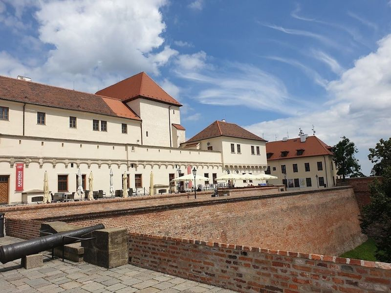
Špilberk Castle
Nestled in the heart of Brno, Czech Republic, Špilberk Castle is a captivating medieval fortress that dates back to the 13th century. Originally constructed by King Premysl Otakar II as a royal residence, it evolved into a formidable baroque stronghold and later gained notoriety as notorious prisons during the Austro-Hungarian Empire. Known as 'the prison of nations,' its dungeons housed political prisoners and revolutionaries alike.
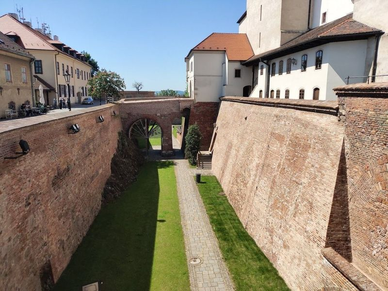
Park of the Špilberk Castle
The park surrounding Špilberk Castle is a spacious and verdant area, featuring pathways, picturesque vistas, and recreational facilities for children. It is a hilly expanse that envelops the castle, offering views of the surroundings. The castle itself holds great historical significance, with stories of its past dominance and use as a prison. However, it is the scenic beauty of the park that truly captivates travellers.
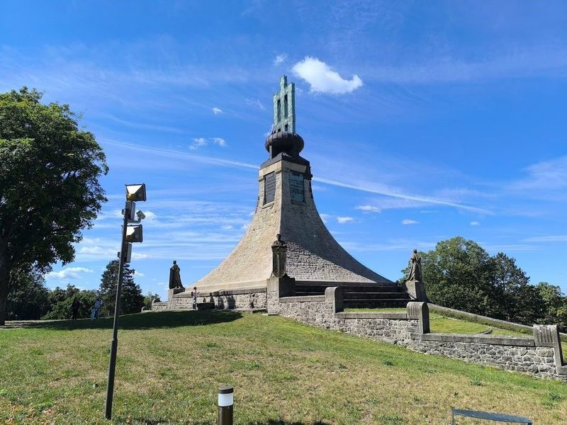
The Cairn of Peace
Nestled near Slavkov, The Cairn of Peace stands as a poignant tribute to the victims of the historic Battle of Austerlitz, which took place in 1805. Established in 1912, this memorial features a small museum dedicated to Napoleon and the battle itself, alongside a charming café and chapel for travellers to enjoy. While renovations are currently underway, guests can still appreciate the impressive monument and explore an array of artifacts that vividly recount this significant event in history.
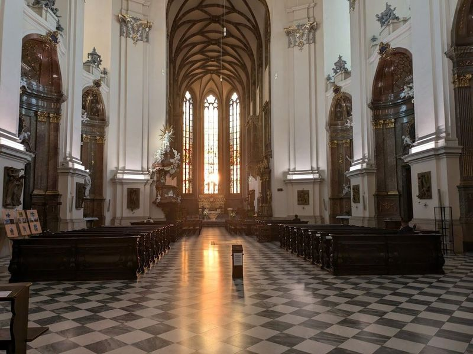
Cathedral of St. Peter and Paul
The Cathedral of St. Peter and Paul, situated atop Petrov Hill in the heart of Brno, is a remarkable Gothic Catholic cathedral with a Baroque interior. Its 84-meter-tall twin towers and splendid architecture make it important Czech cultural monuments. travellers can climb the tower for panoramic views of Brno.
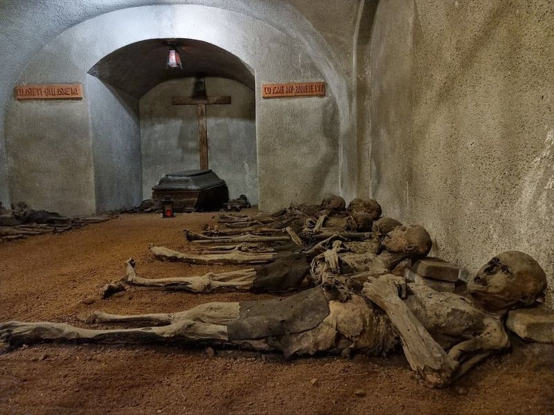
Capuchin Crypt
Capuchin Crypt, located in Brno, is part of the Capuchin Monastery and features a circa-17th-century tomb with mummified remains of Capuchin friars. The monastery's church boasts fine Baroque statues and 17th-century frescos. The crypt houses naturally mummified bodies of monks due to the unique soil and ventilation system. Additionally, beneath St.
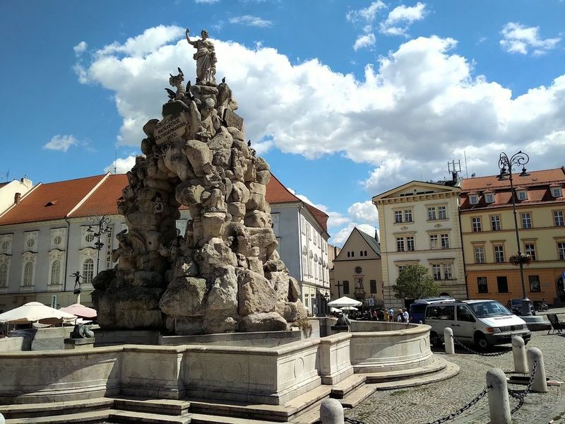
Parnas Fountain
Parnas Fountain is a captivating Baroque fountain In the Vegetable Market square in Brno. The fountain features an impressive sculptural ensemble depicting classical themes, including a sculpture of Hercules bringing Cerberus back from Hades. Surrounding the structure are sculptures of mythical creatures and nymphs, creating an intriguing and picturesque sight for travellers to enjoy.
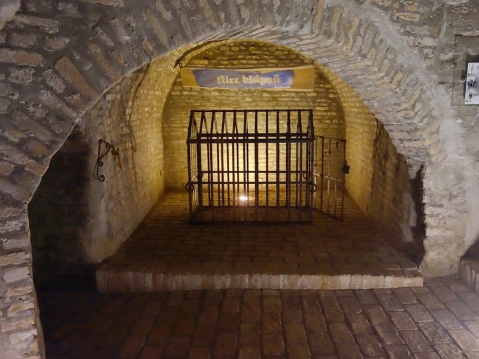
Labyrinth Under the Vegetable Market
Nestled beneath the bustling Vegetable Market lies the intriguing 'Labyrinth Under the Vegetable Market,' a medieval network of tunnels and chambers that once served as food storage. This fascinating site is now open to travellers, showcasing remarkable archaeological finds from its excavation. Above ground, the vibrant market square comes alive with locals purchasing fresh produce, especially on warmer days.
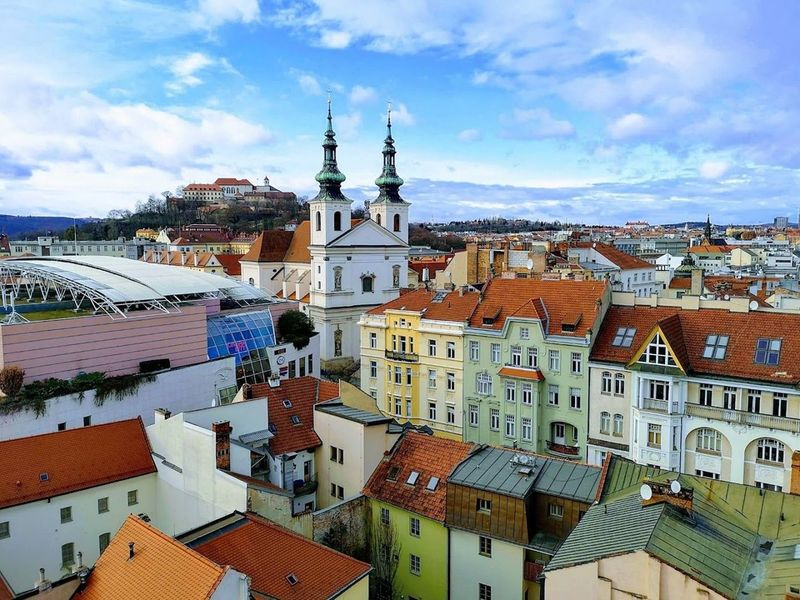
Old Town Hall - Tourist Information Centre
Old Town Hall - Tourist Information Centre is a historic building in Brno that not only houses the tourist information center but also features a gallery, history exhibits, and offers panoramic views of the city from its observation platform. The hall is known for its intriguing features such as a taxidermied crocodile hanging from the ceiling and a sculpture of courage at Moravian Square. Built in the 13th century, it holds many myths and tales that captivate travellers' imaginations.

PAPILONIA - Motýlí dům BRNO
PAPILONIA is a fascinating butterfly house in Brno where travellers can walk among free-flying exotic butterflies in a tropical setting. The site is catalogued as a tourist attraction. PAPILONIA - Motýlí dům BRNO is listed among principal sites for Brno within Czech Republic.
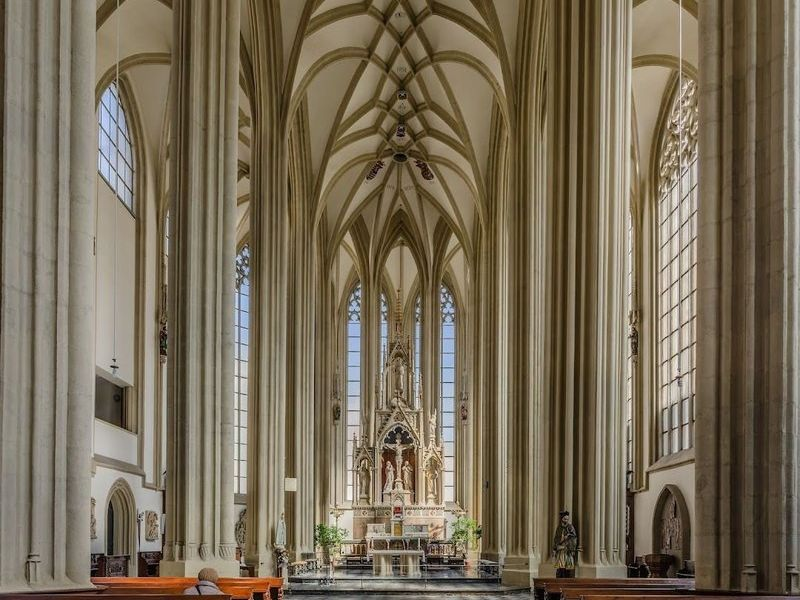
Kostel sv. Jakuba
The catholic church of St. James in Brno is a large, late-gothic building with origins dating back to the 13th century. The church also contains a subterranean ossuary, which is the second largest in Europe. The site is catalogued as a church. Kostel sv. Jakuba is listed among principal sites for Brno within Czech Republic.
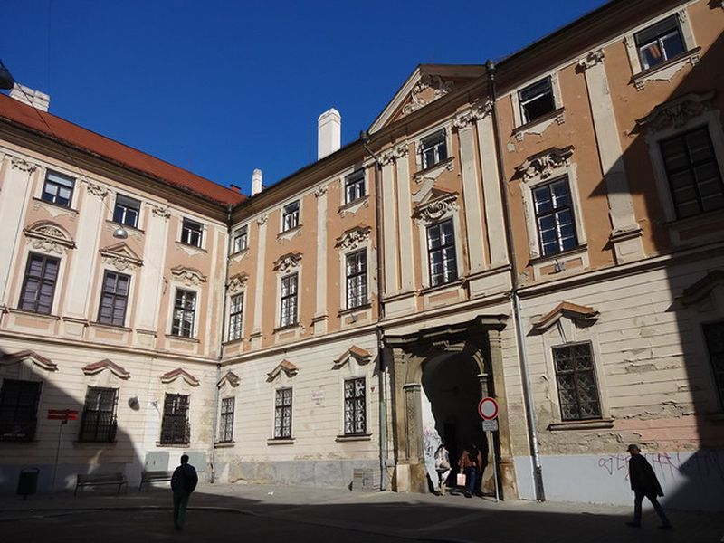
Moravian Gallery - Governor's Palace
Located in a historic palace, the Moravian Gallery features an extensive collection of art and design, including Czech and international works. The site is catalogued as a palace. Moravian Gallery - Governor's Palace is listed among principal sites for Brno within Czech Republic.
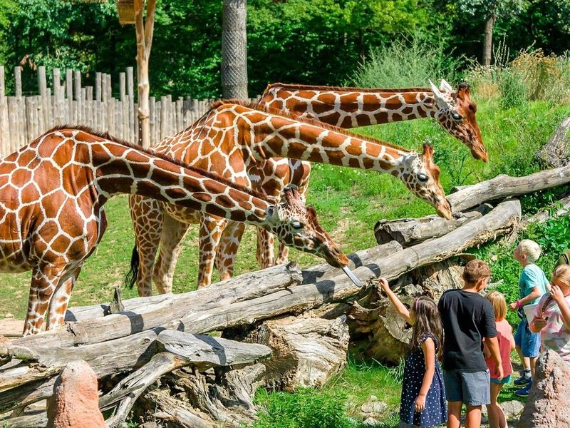
Brno Zoo
Brno Zoo, located in the lively city of Brno in the Czech Republic, is a popular destination for families and nature enthusiasts. Established in 1953, this zoo is home to over 1,800 animals from nearly 400 different species. travellers can observe a diverse range of creatures, including tigers, bears, monkeys, lemurs, fish, and reptiles.
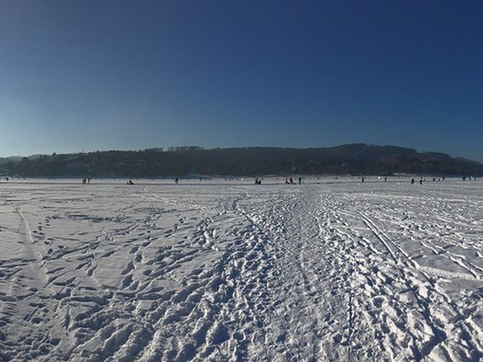
Brno Dam
Brno Dam is a popular recreational area, perfect for boating, swimming, and hiking, with beautiful views and nearby attractions like Veveří Castle. The site is catalogued as a tourist attraction. Brno Dam is listed among principal sites for Brno within Czech Republic.
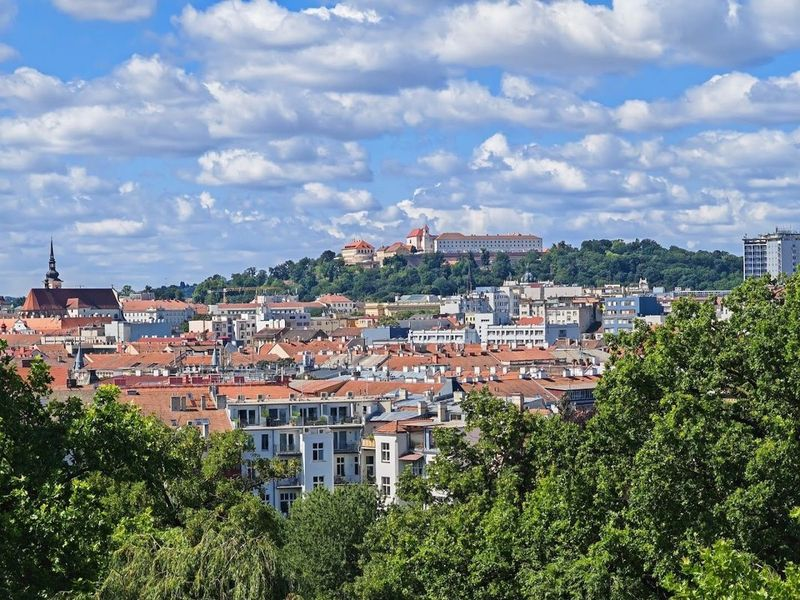
Villa Tugendhat
Villa Tugendhat, a masterpiece of modernist architecture, was designed by architect Ludwig van der Rohe in 1929 and is now a UNESCO World Heritage Site. The villa, located in a prestigious residential area, showcases an open-plan design and innovative use of materials such as onyx, chrome, travertine, and ebony. Guided tours offer travellers the chance to explore this building that represents the cutting-edge technology and concepts of its time.